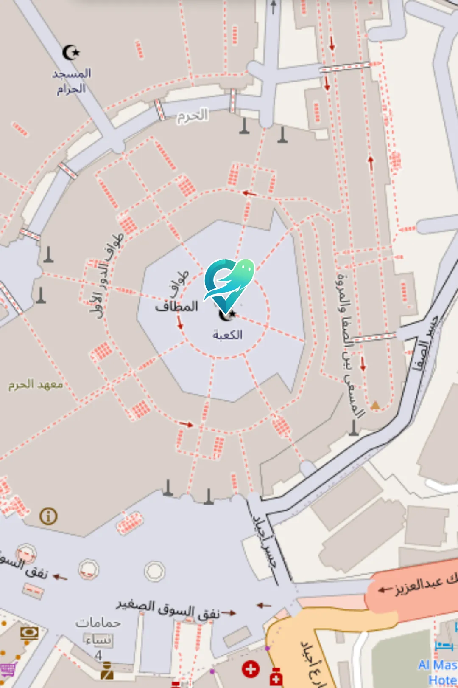
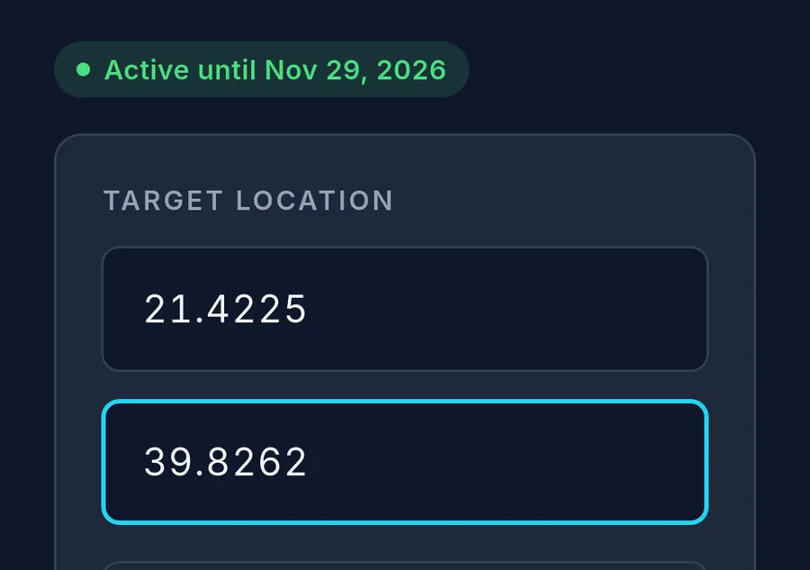
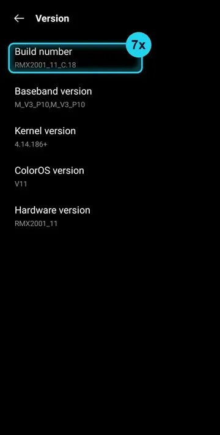
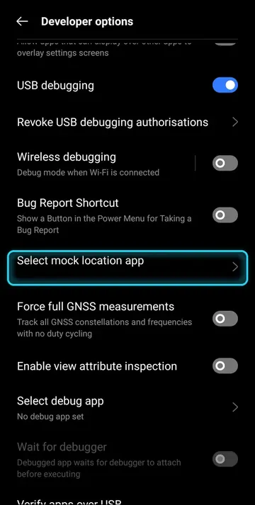
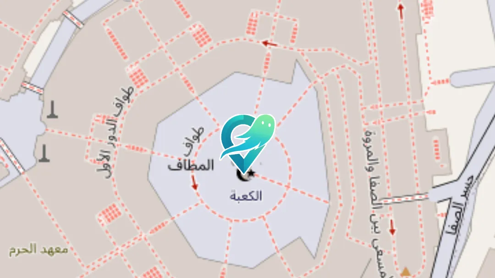

Choose where your phone is.
GeoGhost gives every app on your Android phone one GPS position that you pick. Type the coordinates or tap the map, and it holds until you switch it off.
Needs an activation code. No root, no account.

Sent every second.
Once a second, GeoGhost hands the same position to the GPS, network and fused location providers. Whichever one an app asks, it gets your spot.
Switched off: apps read the real position.
Try it here.
Type it or pick it.
Enter a latitude and longitude, or tap the exact spot on the OpenStreetMap picker. Choose a place to see it land.
One switch.
Turn it on and every app reads the new spot. Turn it off and the real one comes back.
Arabic or English.
The whole app changes language in one tap, laid out right to left in Arabic.
Keeps going in the background.
Lock the phone or open another app. The position is sent again every second until you switch it off.
From download to done.
To begin, download GeoGhost below and allow the install when Android asks. It asks once.
Then, enter the activation code we sent you. It pairs with this phone and stays on it.

The first time, a short setup asks for location and takes you to Developer options, where Android lets you choose GeoGhost as the mock location app. A picture guide shows every tap.


From then on, the app opens straight to your spot. Type the coordinates or pick it on the map, then turn the switch on.

Questions we get
Which phone?